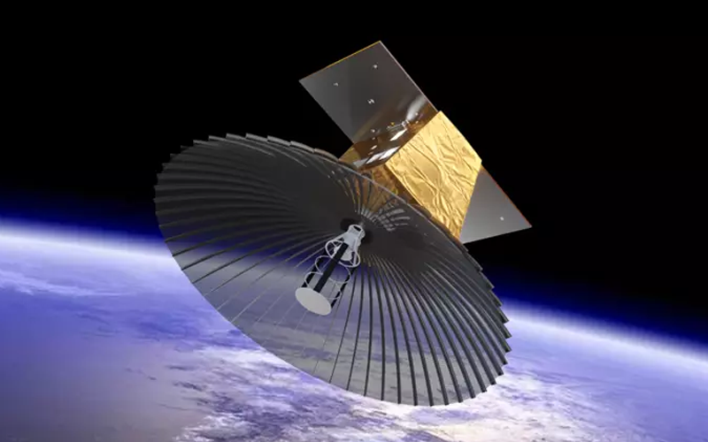
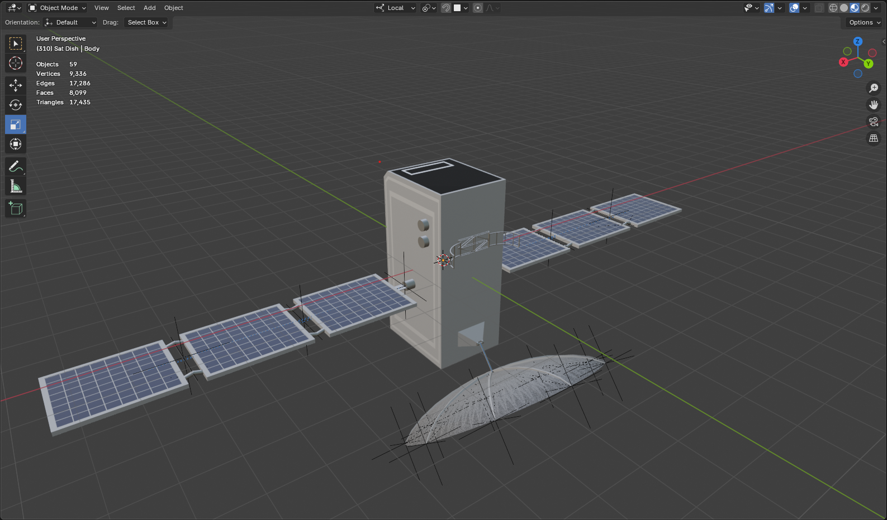
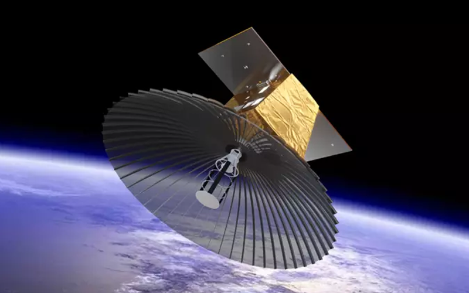
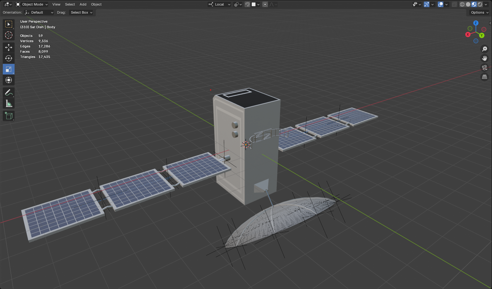

About
Introduction
For my website, I create a virtual cosmos portfolio, where I can display all of my proudest coding projects that I have worked on throughout my career. In order to build this website, I created several 3D models in Blender, for both the planets and satellites.
In this website, each planet represents a different programming language (JavaScript, Java, Python, and C#), with every satellite around each planet representing a different project that I have taken on in that corresponding language. Users are able to traverse through the solar system, selecting planets and satellites to zoom in on and find out more information, with interactions functioning with both mouse and touch inputs
3D Models
As mentioned previously, each planet (including the sun) and satellite is a 3D model created myself using Blender.
The planets are simple, constructed with a basic sphere mesh and a texture map (fetched from Solar System Scope) applied through the shader node editor. Below shows an example of the Blender editor, showcasing the final creation of the Earth. The Earth is unique compared to the other planet models, as a normal map was also provided on the Solar System Scope site, allowing me to add realistic bumps to the models surface. This led to the shader node structure being slightly more complex, adding an additional Image Texture node and a Bump node to amplify the effect of the normal map. All the planets' texture maps led to a Hue/Saturation/Value colour node, in order to make the colours pop more, before being fed into the Principle BSDF.
As for the satellites, these took a lot of extra time and attention to detail. My first satellite, "Sputnik", was a test bed to begin familiarization with Blender, as well as understanding what was needed for integration into the website. Due to this, Sputnik is incredibly simple, being made up of a sphere mesh and four cylinder meshes (made with the Array modifier). A tutorial by Blender Study on YouTube was followed to make this.
After the Sputnik model was complete, and easy integration of satellite models was set up on the website, I moved onto my second satellite, aptly named "sat_1". This satellite was a little more complex, attatching a satellite dish and solar arrays to the body. The satellite dish was created by concaving a sphere mesh in order to create that semi-circular shape, and then proceeding to add a cylinder mesh pertruding from the center, making use of the Inset and Extrude tools to make this cylinder get smaller in steps. The creation of the solar arrays for sat_1 utilized similar tools, initially taking a rectangular mesh with little depth, insetting, extruding, and even bevelling faces. The Subdivide tool was also used to create sub-faces for each solar cell. Once a design for one "wing" of the solar array was settled on, I used the Mirror modifier to duplicate the array on the opposite side of sat_1's body. Similar to the Sputnik satellite, a tutorial by Blender Study was followed to make sat_1.
The completion of the Sputnik and sat_1 satellites led to enough confidence to create a satellite based solely off of a reference image, leading to the creation of sat_2. The reference image (shown in first image below), from Dassault Systèmes presented a lot more complexity compare to my previous models. The largest of all complexities, by far, was the textured body panels with rounded triangular cutouts. However, each body panel was the same, with only rotation being the varying factor, and so I created a seperate .blend file to design this panel before linking it into the satellites model. After the panels were created, it was as simple as reusing the skills I learned from my first two satellite models to create the dish, solar arrays, and what appears to be an ion engine on the back. In addition to these, I created a tall, skinny cylindrical boom, representing a magnometer science instrument. This structure is made up of many smaller rectangle meshes, all aligned and overlapped at an angle around a circle using the Array modifier, as well as to stack multiple iterations onto of one another. An image of the final result in Blender can be seen in the second image below.
Not only was sat_2 solely based off of a reference image, but it was also the first satellite to recieve animations. In this satellites animation, the magnometer boom expands and contracts in and out of it's storage box, and the solar arrays fold in and out of the body, providing a compact profile (animation found here). In learning the ability to animate models, I returned to sat_1 to provide the same for it's solar arrays. This led to a complete redesign of the arrays, where each "wing" held eight solar cells in a 2x4 grid. These solar cells fold up into (and of course out from) a compact 1x1 space, rotating about three different axes. This task was much more complex than anticipated, requiring the learning and use of the constraint Child Of, linking each solar cell to three different Empty Plain Axes. These empties represented hinge points, and allowed the animation of rotating each cell around three different rotation points. The final animation for sat_1 can be found here.
Taking all that I learned from the previous three satellites, I created "sat_3", again solely referencing images. The two images I took inspiration from can be found below (first and second), largely taking the design of the first imaged satellite (from BBC News) and replacing the satellite dish with the second image's dish (from NASA). As expected, this satellite is also animated, with each segment of the solar arrays folding in alternating directions using Child Of constraints again, the bracket that "holds" the satellite dish in it's stowed position opening and closing, and the satellite dish boom rotating up and down for the dish itself to open and close (as exampled by the first image below). The resulting animation for sat_3 can be found here.
 



Integration
When integrating new models to the website, I wanted it to be as quick and easy as possible. Loading a new model in is exactly the same every time, and so to control the loading of the model for an object, as well as to control other properties, I created a class to handle all of it, alongside a JSON file where I can store object data and hierarchy. This hierarchy defines which planet the satellites are a child of, with entries for both planets and satellites (plus the sun) holding data such as the model directory, orbit radius and speed, scale, and information. In doing this, I am simple able to add a new satellite to the list of children for a chosen planet, provide the necessary data points, including a directory link for the satellite's model, and the satellite is automatically added to the website in the correct orbit. Animations are also automatically detected and played upon focusing on the satellite, as well as through a button available in the information box. To do all of this, I have made use of the THREE.js library in JavaScript.
Interaction
This website has various interaction controls. The user is able to orbit around the solar system to view it from varying perspectives, as well as zooming in and out, and can interact with each object in the scene. Simply hovering over an object (limited to children of the currently focused object, not grandchildren) provides a 2D circle around the object to indicate selection, and a hovering info box the provides that objects title and subtitle. Upon clicking on a given object, the info box will persist until the next click on the scene. When the user double clicks on an object, the scene's camera will zoom in onto that object, unveiling the children of that object. To return back to the previous object, the user can either hit the "Escape" button on their keyboard, or click the "Back" UI button seen on the screen.
If there is information available for an object, an information box is provided in the top right of the screen. This information box provides the title, subtitle, and description of the object (all defined in the JSON file), as well as an open/close (forward/reverse play) button to animate the object if an animation is available.
In the upper left corner of the screen, there is a settings cog icon, , which upon clicking on, opens up a settings menu for the renderer. This menu provides controls for adjusting the scene lighting, both ambient and point (from the sun), and toggling wireframe mode for all objects in the scene. The lighting settings are needed due to how dark the scene setting is. Depending on the surrounding light the user has, the screen could be too difficult to see properly, and so having the ability to control the scene's lighting effects will help mitigate this problem. These lighting settings are store in the session variables, so that the changes persist when refreshing the page.
On top of all the interactions the scene provides, there is also a basic navigation bar at the top of the page, which provides the user an alternative method of traversing between planets. The title name in this navigation bar, on the far left, will also redirect the user back to focusing on the sun.
Finally, all interactions where the user can click, these functions also work as expected on a touch screen device.
Implementation
I have conducted extensive testing of my website to ensure all click/tap events and links function as expected. All objects on the scene can be hovered over, clicked, and double clicked on, resulting in the desired behaviours outlined in Interaction. These interactions have been tested on a variety of browsers too, including Google Chrome, Edge, FireFox, and Opera. As well as this, touch screen interactions have been ensured to work in the same way as using a keyboard and mouse would.
Throughout the course of building this website, I recieved several points of feedback for improvements, listed below:
- "Planets should not be moving at a realistic pace, as that can be dull and boring."
Initially, planets would move at a realistic speed to mimic the real world solar system. However, this movement was incredibly slow, essentially making the planets static objects. So, in order to speed the simulation up, I implemented a orbit speed multiplier into the JSON file, that would be used to control the rate of orbit equally for all objects in the scene. The addition of this made the website much more interesting and engaging, as the user is able to actually see things happening on the screen without needing to do anything.
- "It is not clear as to how you go back to the parent object."
Throughout the development of this website, the only way to return to the parent object was to press the "Escape" key on the keyboard, with there being no indication on the screen to tell the user to do this, and being a massive issue for users without a keyboard (such as those on mobile). This was naturally a problem, but did not get fixed until later on in the development when the information box was implemented. Along side the information box implementation, I added two buttons that could be used to interact with the scene, one of which was the "Back" button that takes the user back to the parent object (the other button being the "Open"/"Close" button for animations). This immediately made the website much more user friendly, providing a clear and easy way of moving back and forth between objects, as well as providing an actual way for users without a keyboard to fulfil these actions.
- "You can't tell what each object is without clicking onto it, which can get annoying and repetitive."
This comment was made in response to the implementation of each objects information box in the top right corner when zooming in on it. To find out what an object's purpose was, the user needed to click and zoom into that object to find out, leading to potentially unecessary interactions if they do not find what they are looking for. To mitigate this problem, I implemented the hovering info box, that pops up when the user hovers over a given object (and persits when single clicking on the object), and provides the title and subtitle for a brief summary of the object's purpose.
Future Work
I am very happy with the result of this website, however, there are a handful of areas that require improvement.
Firstly, the largest issue is the massive delay when loading the main scene page. This is caused by the loading of models from their .glb files, and the lag will increase drastically for every new model added to the website. Obvisouly, this is not sustainable. A temporary solution would be to add a "loading" bar while the models are being prepared, informing the user that the website is in fact working, and that they just need to wait for a little bit. However, this cannot be a permanent solution as the wait time still cannot take too long. So, instead, a better, more permanent solution would be to only load the models of the currently focused object's children. Upon selecting and zooming into an object, the children of that object would then be loaded while the zoom is in progress. This solution means that only the necessary models are ever loaded, and will massively reduce the loading wait times.
Another feature that I would like to implement is to link my GitHub account to the creation of projects. In doing this, the website will automatically detect a new project that I have uploaded to GitHub, figure out what language it is primarily written in, and create a new satellite around the corresponding planet. This feature could come with a rocket model being "launched" from Earth that users can see, indicating the launching of a new project.
A final aspect to add would be to bring life to the sun. Currently, the sun is a static sphere that merely rotates. I would like to add a fireball animation to it, mimicing the behaviours we observe in real life, in addition to solar flares. Due to the limitations of THREE.js and exporting models to a .glb file, smoke effects in Blender cannot be used to create this desired fireball effect, and so an alternative method needs to be explored.